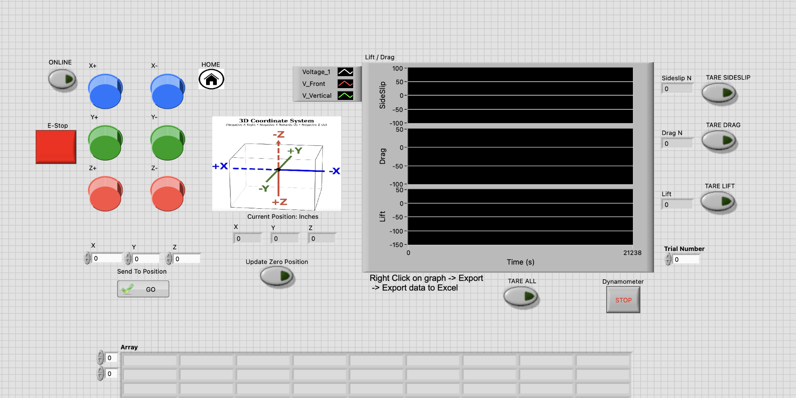
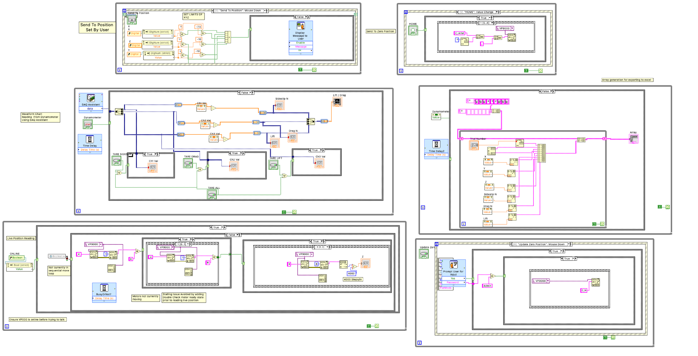
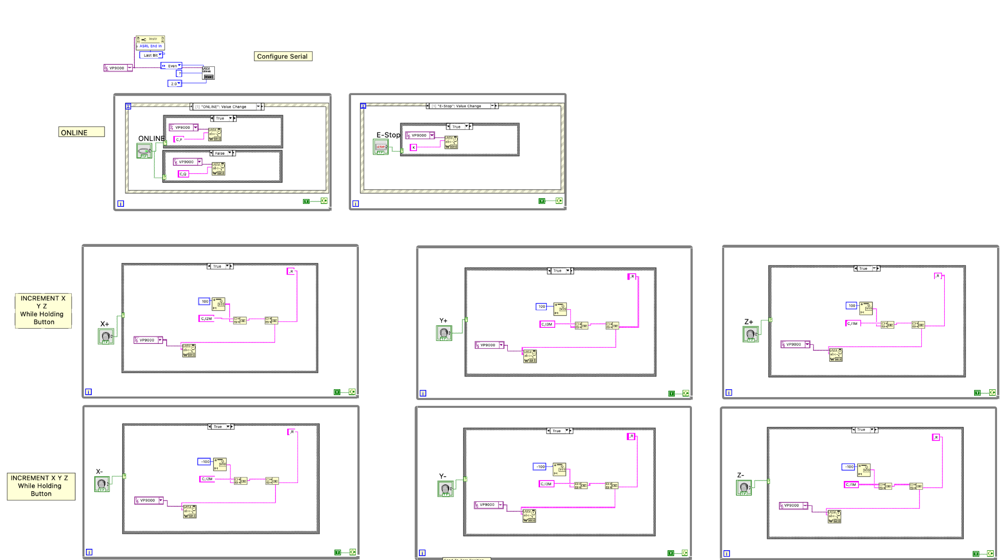

01 / SENIOR DESIGNLABVIEW • RS-232 • DAQ
01
Wind Tunnel
Data Acquisition & Control
A LabVIEW interface for controlling a three-axis probe position system and collecting dynamometer measurements in real time.
- ↳ RS-232 communication with a VP9000 controller
- ↳ X / Y / Z probe positioning with home and zero-position controls
- ↳ Real-time lift, drag, and sideslip visualization
- ↳ Trial data organized for export and analysis
LabVIEWRS-232DAQInstrumentation


